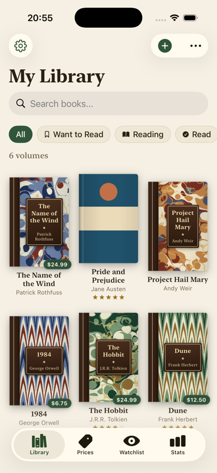
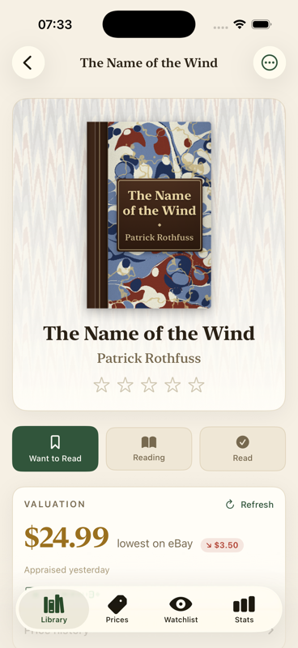
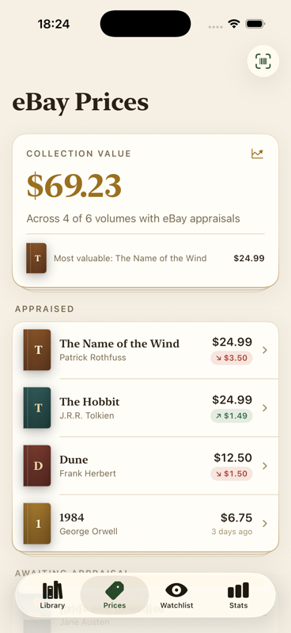
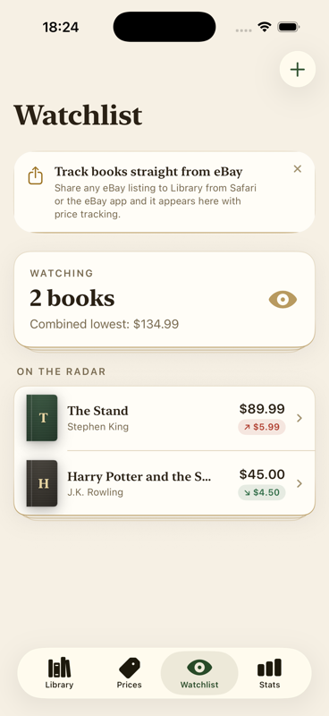

A catalog for the discerning reader
Your library, handsomely appraised.
Shelfworth catalogs the books on your shelves and keeps a quiet eye on what they’re worth — bound in ivory paper, library green, and marbled boards worthy of a 19th-century athenaeum.

Chapter I · The Catalog
Every volume in its place
Scan a barcode, photograph a title page, or search by name — Shelfworth binds each book into your catalog with its full bibliographic record. Books without jackets are dressed in cloth or half-leather marbled bindings, so the shelf always reads like a collection, never a database.
Track reading status from Want to Read to Read, rate with a touch, and keep marginalia on every book.

Chapter II · The Valuation
What is the shelf worth tonight?
Behind the scenes, Shelfworth appraises your collection against live eBay listings — the lowest current ask for each book, refreshed with a pull and re-checked automatically when an appraisal goes stale, with the full price history charted like an auction ledger.
Gains and losses are marked from the collector’s perspective, so a falling price on your own shelf reads as the caution it is.

Chapter III · The Watchlist
Covet with confidence
For the books you don’t yet own, the watchlist follows the market so you don’t have to — the current lowest ask, its movement since the last check, and a tap through to the listing when the moment is right.
Better still: share an eBay listing straight into Shelfworth and it joins the watchlist — matched to its book, dressed in its binding, and appraised on the spot.

Colophon
Bound by hand, in Swift
Construction
SwiftUI and SwiftData, with barcode scanning, title-page capture, and CSV & JSON export of the whole collection.
Illumination
The marbled papers are generated in-app by a classical drop-and-tine renderer — the same sheets you see on this page.
Provenance
Open source under the MIT license. Issues, pull requests, and marginalia welcome on GitHub.